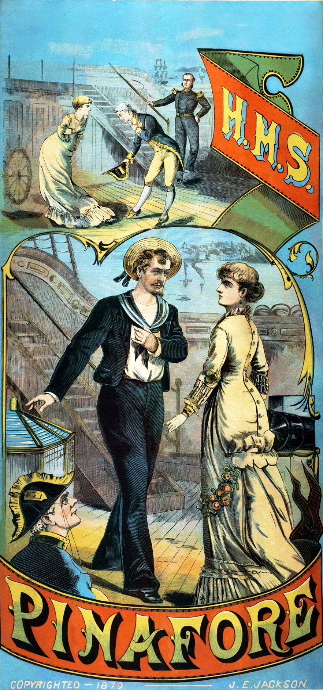

Enter SIR JOSEPH'S FEMALE RELATIVES (They dance round stage) REL. Gaily tripping, Lightly skipping, Flock the maidens to the shipping. SAILORS. Flags and guns and pennants dipping! All the ladies love the shipping. REL. Sailors sprightly Always rightly Welcome ladies so politely. SAILORS. Ladies who can smile so brightly, Sailors welcome most politely. CAPT. (from poop). Now give three cheers, I'll lead the way ALL. Hurrah! hurrah! hurrah! hurray! Enter SIR JOSEPH with COUSIN HEBE SONG—SIR JOSEPH I am the monarch of the sea, The ruler of the Queen's Navee, Whose praise Great Britain loudly chants. COUSIN HEBE. And we are his sisters, and his cousins and his aunts! REL. And we are his sisters, and his cousins, and his aunts! SIR JOSEPH. When at anchor here I ride, My bosom swells with pride, And I snap my fingers at a foeman's taunts; COUSIN HEBE. And so do his sisters, and his cousins, and his aunts! ALL. And so do his sisters, and his cousins, and his aunts! SIR JOSEPH. But when the breezes blow, I generally go below, And seek the seclusion that a cabin grants; COUSIN HEBE. And so do his sisters, and his cousins, and his aunts! ALL. And so do his sisters, and his cousins, and his aunts! His sisters and his cousins, Whom he reckons up by dozens, And his aunts!
For I'm called Little Buttercup—dear Little Buttercup, Though I could never tell why, But still I'm called Buttercup—poor little Buttercup, Sweet Little Buttercup I!
Aye, Little Buttercup—and well called—for you're the rosiest,the roundest, and the reddest beauty in all Spithead.
Red, am I? and round—and rosy! Maybe, for I have dissembled well! But hark ye, my merry friend—hast ever thought that beneath a gay and frivolous exterio there may lurk a canker-worm which is slowly but surely eating its way into one's very heart?
No, my lass, I can't say I've ever thought that.
I have thought it often. (All recoil from him.)
Yes, you look like it! What's the matter with the man? Isn't he well?
Don't take no heed of him; that's only poor Dick Deadeye.
I say—it's a beast of a name, ain't it—Dick Deadeye?
(looking down hatchway).
That is the smartest lad in all the fleet— Ralph Rackstraw!
Ha! That name! Remorse! remorse!
But it's a strange anomaly, that the daughter of a man who hails from the quarter-deck may not love another who lays out on the fore-yard arm. For a man is but a man, whether he hoists his flag at the main-truck or his slacks on the main-deck.
My gallant crew, good morning.
My child, I grieve to see that you are a prey to melancholy. You should look your best to-day, for Sir Joseph Porter, K.C.B., will be here this afternoon to claim your promised hand.
Ah, father, your words cut me to the quick. I can esteem—reverence—venerate Sir Joseph, for he is a great and good man; but oh, I cannot love him! My heart is already given.
(from poop).
When at anchor here I ride, My bosom swells with pride, And I snap my fingers at a foeman's
And so do his sisters, and his cousins, and his aunts!
But when the breezes blow, I generally go below, And seek the seclusion that a cabin grants;
And so do his sisters, and his cousins, and his aunts!
His eyes should flash with an inborn fire,
His brow with scorn be wrung;
He never should bow down to a domineering frown,
Or the tang of a tyrant tongue.
His foot should stamp and his throat should growl,
His hair should twirl and his face should scowl;
His eyes should flash and his breast protrude,
And this should be his customary attitude—(pose).
| Character | Singer | Offer |
|---|---|---|
| HEBE | DSP | $ 1 Million |
| JOS | Shreya Ghoshal | $ 5 Million |
| CAPT. | Keeravani | $ 2 Million |
